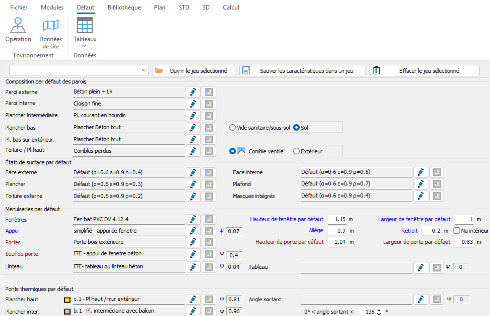
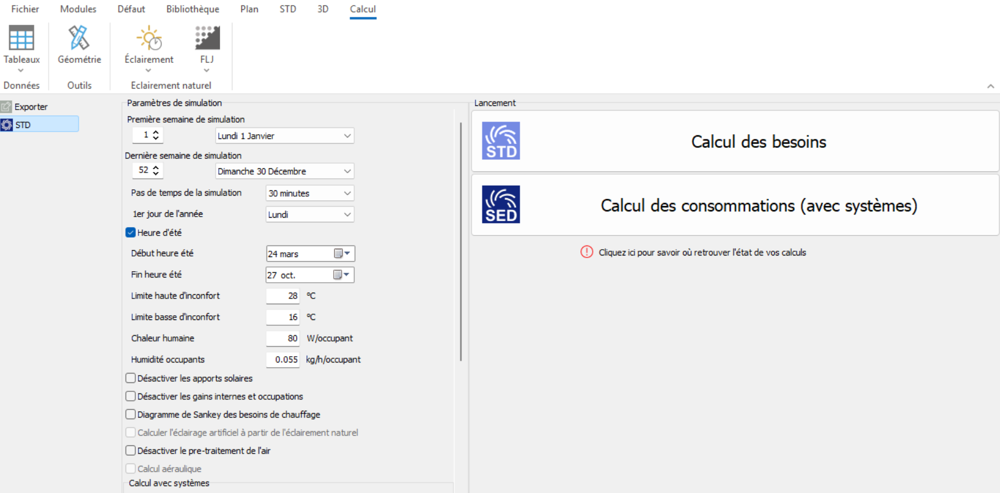

Pléiades
À quoi ça sert
Pléiades est le logiciel de référence en France pour la simulation thermique dynamique (STD) des bâtiments. Il permet de modéliser un bâtiment, de lui attribuer des compositions de parois, des scénarios d'occupation et des systèmes, puis de simuler heure par heure son comportement thermique sur une année complète.
Pléiades produit les besoins de chauffage et de refroidissement, les températures intérieures, le confort d'été, et peut générer les indicateurs réglementaires RE2020. Il est largement utilisé dans les bureaux d'études thermiques français, et dispose d'un module ACV / carbone pour les projets qui le nécessitent.
Quand l'utiliser dans cette toolbox
Pléiades demande un niveau de détail — géométrie figée, compositions de parois définies, hypothèses d'occupation — qui n'est disponible qu'à partir de l'avant-projet sommaire. Ce n'est pas un outil d'esquisse pure.
Pléiades répond aux questions suivantes de la toolbox :
- Quels sont les vents dominants et comment affectent-ils mon projet ?
- Mon bâtiment est-il assez compact ?
- Quelle orientation donner à mon bâtiment ?
- Quels seront les besoins annuels de chauffage et de refroidissement ?
- Quelle épaisseur d'isolation choisir ?
- Mon bâtiment risque-t-il de surchauffer en été ?
Prise en main
Pléiades demande un investissement réel — compter plusieurs jours pour être autonome sur un modèle simple. L'interface est en français, dense mais structurée. La logique générale : on crée un modèle (plan, niveaux), on renseigne les compositions par défaut des parois dans l'onglet Défaut, on insère les ouvertures, on paramètre le calcul STD, puis on lance la simulation et on lit les résultats.
L'accès étudiant passe par la licence éducation de l'établissement — à demander via ton responsable pédagogique. Il n'existe pas d'accès individuel gratuit.
Étapes générales d'une simulation
1. Le fichier météo
Télécharger le fichier météo de la commune sur climate.onebuilding.org, puis l'ajouter dans Pléiades Modeleur via STD / Météo. Le fichier contient température extérieure, rayonnement solaire, humidité et vent.
2. La modélisation


Tracer le plan du bâtiment, gérer les niveaux, puis renseigner dans l'onglet Défaut les compositions des parois et les ponts thermiques.
3. Les ouvertures

4. Le calcul

Dans l'onglet Calcul, paramétrer la simulation (période, pas de temps, limites de confort, gains internes), puis lancer le Calcul des besoins (STD) ou le Calcul des consommations (avec systèmes).
5. Les résultats

Pléiades Résultats donne les besoins annuels, les apports solaires, les courbes de températures intérieures, les données de rayonnement et d'humidité. Les résultats sont exportables vers Excel pour produire des tableaux ou graphiques de comparaison.
Méthode : comparer des variantes
Pléiades est particulièrement utile pour arbitrer entre plusieurs options de conception. La règle d'or : ne faire varier qu'un seul paramètre à la fois, en gardant identiques la surface de plancher, la météo, l'occupation, le chauffage et la ventilation. On duplique le modèle, on crée la variante, on relance, et on compare. C'est cette démarche comparative qui fait la valeur de l'outil en phase de conception.
Ce que Pléiades fait bien
- Géométrie et zonage thermique
- Compositions d'enveloppe et inertie thermique
- Apports solaires à travers les vitrages
- Masques proches et ombrage
- Scénarios d'occupation et gains internes
- Besoins de chauffage et de refroidissement
- Températures intérieures et confort d'été
- Comparaison de variantes (orientation, vitrage, isolation)
- Indicateurs RE2020 et contribution photovoltaïque
- ACV / carbone si le module est disponible
Ce que Pléiades ne fait pas (ou pas bien)
- Analyse fine de l'horizon montagneux ou du relief (SIG)
- Confort au vent détaillé autour des bâtiments
- Prédiction d'écoulement d'air en CFD
- Simulation d'îlot de chaleur urbain
- Microclimat végétation / cours d'eau
- Autonomie en lumière du jour et éblouissement détaillés
- Vérification Passivhaus certifiée
- Calepinage photovoltaïque et dimensionnement des onduleurs
- Transfert hygrothermique complet dans les matériaux en terre
- Analyse structurelle
Forces et limites
Forces
- Référence française reconnue, conforme à la méthode RE2020
- Couvre tout le spectre STD : besoins, confort, RE2020, ACV
- Excellent pour la comparaison de variantes
- Interface et documentation entièrement en français
- Licence éducation disponible pour les écoles
Limites
- Payant — accès étudiant uniquement via licence établissement
- Windows uniquement
- Courbe d'apprentissage réelle — plusieurs jours pour l'autonomie
- Non adapté à l'esquisse pure (géométrie figée requise)
- Ne couvre pas la CFD, le microclimat fin, ni le transfert hygrothermique complet dans les matériaux en terre
Ressources
- Site officiel IZUBA énergies →
- Fichiers météo EPW — climate.onebuilding.org →
- Documentation et formations IZUBA (disponibles sur le site officiel)